Introduction
The OSI (Open Systems Interconnection) model was developed by the International Organization for Standardization (ISO) to provide a framework for designing and understanding computer networks. The development of the OSI model began in the late 1970s, and the standard was first published in 1984
- Late 1970s: The need for a standardized model for networking was recognized as computer networks were becoming increasingly complex. Different networking technologies were emerging, and there was a lack of consistency in how these technologies communicated with each other.
- Early 1980s: The International Organization for Standardization (ISO) initiated efforts to create a universal networking model that could serve as a reference for network development and interoperability.
- 1983: The OSI model was officially introduced as a conceptual framework to standardize network communications. It aimed to provide a clear and comprehensive understanding of the various layers involved in network communication
- 1984: The OSI model was published as international standard ISO 7498. This standard defined seven abstraction layers, each serving a specific purpose in the process of network communication
There isn't a specific physical location associated with the development of the OSI model because it involved contributions from experts and organizations around the world.
Seven Layer
- Physical Layer:
- Data Link Layer:
- Network Layer:
- Transport Layer:
- Session Layer:
- Presentation Layer:
- Application Layer:
This layer deals with the physical connection between devices. It defines the hardware elements involved, such as cables, switches, and network interface cards
This layer is concerned with creating a reliable link between two directly connected nodes. It ensures that data packets are delivered error-free and in the correct order.
The network layer is responsible for determining the best path for data packets to reach their destination across a network. It handles routing and forwarding of data between different networks.
The transport layer is responsible for end-to-end communication between devices on different hosts. It ensures that data is delivered reliably and in the correct sequence. Protocols like TCP (Transmission Control Protocol) operate at this laye
The session layer manages and maintains communication sessions between applications on different devices. It establishes, maintains, and terminates connections, ensuring that data is properly synchronized and organized
This layer deals with data translation and encryption, ensuring that information sent from one system can be understood by the recipient system. It is responsible for data compression, encryption, and protocol conversion.
The application layer provides network services directly to end-users or applications. It enables communication between different applications and provides various network services like email, file transfer, and remote access.
physical layer
This layer deals with the physical connection between devices
the transmission and reception of raw data bits over a physical medium such as cables or wireless signals
key function
Physical Media: The Physical Layer defines the types of cables and connections used to transmit data, such as Ethernet cables, fiber-optic cables, or wireless
It also includes specifications for connectors, switches, and other networking hardware
Data Rate and Bandwidth: It specifies the data rate, which is the speed at which data is transmitted over the network. It is usually measured in bits per second (bps). Bandwidth refers to the maximum data rate that a communication channel can support
Topology: The Physical Layer defines the physical layout or topology of the network, such as bus, star, ring, or mesh topology. Different network topologies have different implications for how data is transmitted and how devices are connected.
Transmission Modes: The Physical Layer supports different transmission modes, including simplex (one-way communication), half-duplex (two-way communication, but not simultaneously), and full-duplex (two-way communication simultaneously).
Physical Signaling: It includes specifications for electrical voltages, light pulses (in fiber-optic communication), or radio waves (in wireless communication) used to transmit data bits over the physical medium.
Bit Order: The Physical Layer defines the order in which bits are transmitted over the medium, such as most significant bit first (MSB) or least significant bit first (LSB).
Data Encoding: It specifies how digital data is encoded into signals for transmission. Different encoding schemes, such as Manchester encoding or NRZ (Non-Return-to-Zero) encoding, are used to represent binary data as electrical or optical signals.
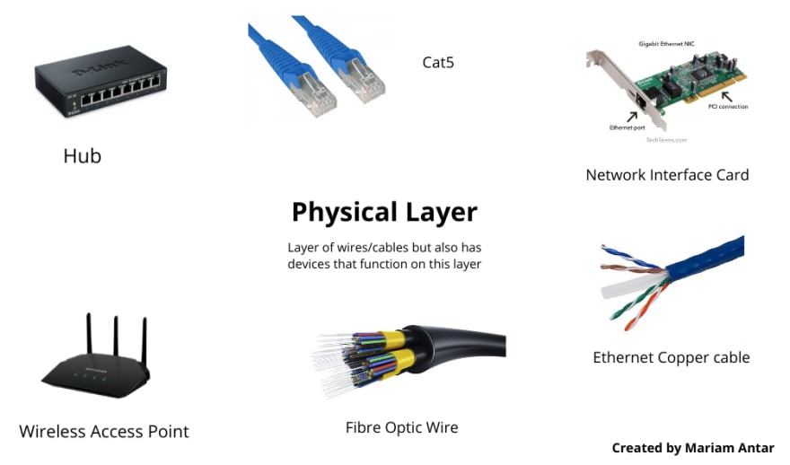
Data Link layer
This layer is responsible for creating a reliable link between two directly connected nodes on a network.
It ensures that data frames are delivered error-free and in the correct order between devices on the same local network.
The Data Link Layer achieves this by providing mechanisms for framing, addressing, error detection, and flow control
key function
Framing: The Data Link Layer encapsulates network layer packets into frames. Frames include control information, such as source and destination MAC (Media Access Control) addresses, as well as error-checking mechanisms like Frame Check Sequence (FCS) for ensuring data integrity during transmission.
MAC Addressing:Each network device, such as network interface cards (NICs) and switches, has a unique MAC address assigned to its hardware. The Data Link Layer uses MAC addresses to identify the source and destination of data frames within a local network
Error Detection and Correction: The Data Link Layer detects errors in transmitted frames
using techniques like Cyclic Redundancy Check (CRC). If errors are detected, the frames can be retransmitted to ensure data integrity.
Flow control:Flow control mechanisms prevent fast senders from overwhelming slow receivers. This is particularly important in scenarios where data transmission rates differ between sender and receiver devices. Flow control ensures that data is sent at a rate that the receiver can handle without dropping frames..
Switching: Switching is transparent to the user and does not require any configuration in the home network. Switches are used to forward the packets based on MAC addresses. A Switch is used to transfer the data only to the device that has been addressed
Unlike hubs, switches are more intelligent and forward frames only to the specific devices that need them, reducing network congestion and improving efficiency.
Logical Link Control (LLC) SublayerThe LLC sublayer of the Data Link Layer handles error checking and flow control. It also manages logical links between devices on a network, allowing multiple network protocols to share the same physical medium.
Media Access Control (MAC) Sublayer: The MAC sublayer is responsible for controlling access to the network medium. It determines how devices on a shared network can access and use the physical channel without causing data collisions. Ethernet protocols like CSMA/CD (Carrier Sense Multiple Access with Collision Detection) operate at this sublayer
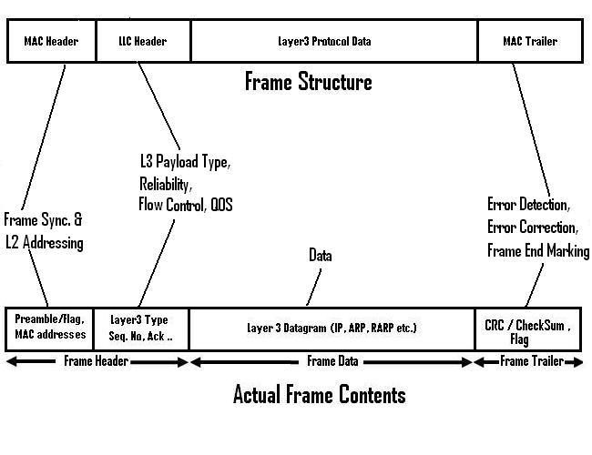
Frame Structure

- Preamble: The preamble is a series of bits (usually 7 bytes) at the beginning of the frame. It helps the receiving device synchronize its clock with the sender's clock. Synchronization is essential for the receiver to understand the timing of the incoming bits.
- Start Frame Delimiter (SFD): The SFD marks the end of the preamble and indicates the start of the frame's actual data. It tells the receiver where the frame's header begins.
- Destination MAC Address: This field contains the MAC address of the device to which the frame is being sent. Devices on the same network read the destination MAC address to determine if the frame is intended for them. The length of this field is typically 6 bytes.
- Source MAC Address: This field contains the MAC address of the sender or source device. It informs the recipient of the frame about the sender's identity. Like the destination MAC address, this field is usually 6 bytes long.
- EtherType or Length: In Ethernet frames, this field indicates the type of data in the frame. If the value in this field is greater than or equal to 1536 (0x600 in hexadecimal), it represents the EtherType, specifying the protocol carried in the frame (such as IPv4 or IPv6). If the value is less than or equal to 1500 (0x05DC in hexadecimal), it indicates the Length of the frame.
- Data: This section of the frame contains the actual payload data from the higher layers of the OSI model. It could be an IP packet, a TCP segment, or any other higher-layer data.
- Frame Check Sequence (FCS): The FCS is a field at the end of the frame used for error detection. It is generated by the sender based on the contents of the frame. When the frame is received, the recipient recalculates the FCS based on the received frame data. If the calculated FCS does not match the received FCS, the frame is considered corrupted and is typically discarded
- End of Frame (EOF): The EOF marks the end of the frame. It signifies to the receiver that the frame transmission is complete
- Flag: It contains the points to the starting and the ending of the frame.
Header
Payload
Trailer
Network layer
The Network Layer is responsible for managing logical addressing, routing, and the delivery of data packets from the source to the destination across multiple networks.
key function
Logical Addressing: Devices on a network are identified by logical addresses, such as IP (Internet Protocol) addresses in the case of the Internet. The Network Layer adds a header to the data packet, including the source and destination IP addresses
Data Rate and Bandwidth:Routing is the process of determining the optimal path for data packets to travel from the source to the destination. Routers are devices that operate at the Network Layer and use routing algorithms and tables to forward packets along the appropriate paths. They make decisions based on the destination IP address, network topology, and other factors.
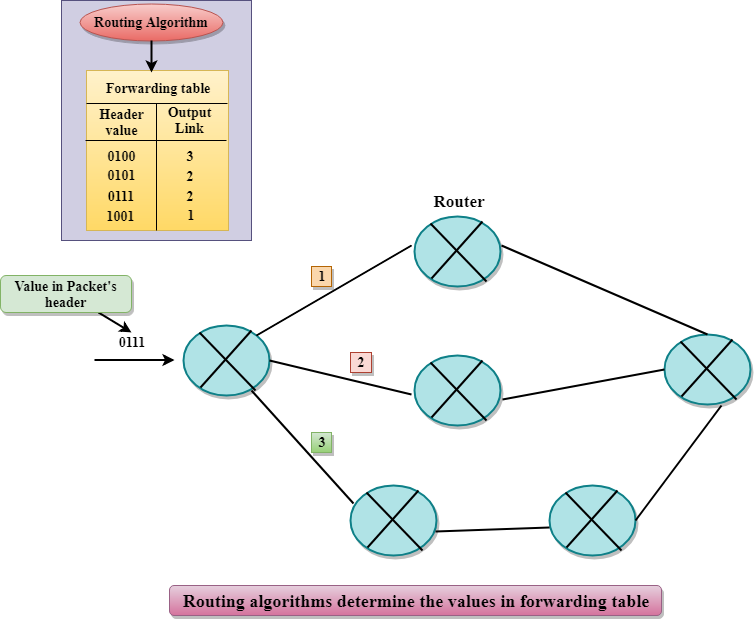Packet Forwarding: The Network Layer encapsulates data packets into packets. Each packet contains a header with source and destination IP addresses, among other information. Routers use this header information to forward packets towards their destination. Routing protocols, such as OSPF (Open Shortest Path First) and BGP (Border Gateway Protocol), are used to exchange routing information between routers.
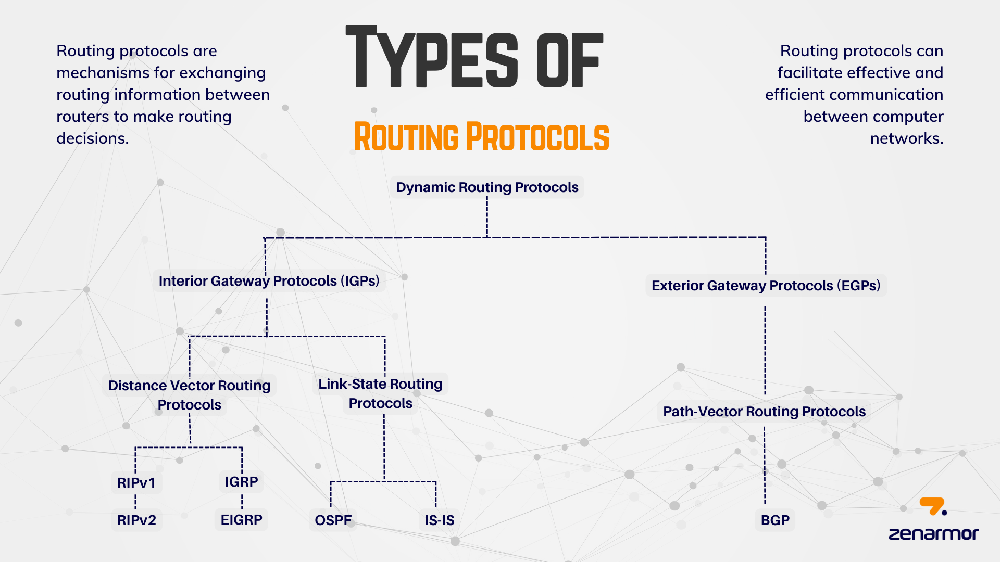 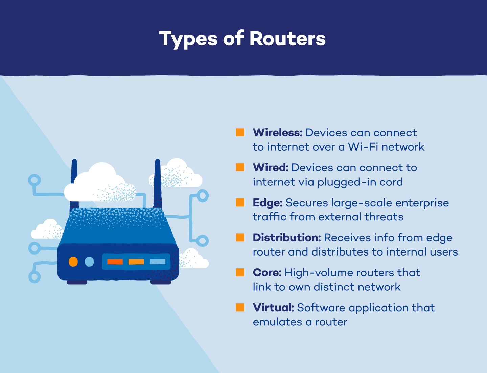Fragmentation and Reassembly: The Network Layer can fragment large packets into smaller pieces for transmission over networks with smaller maximum frame sizes. Fragmentation allows data to be transmitted across networks with different media types and sizes. At the destination, these fragments are reassembled back into the original packet.
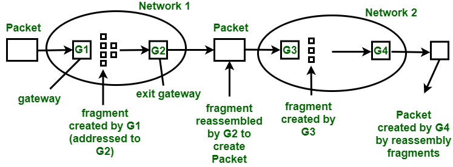Quality of Service (QoS): The Network Layer can support QoS mechanisms, allowing different types of traffic to be prioritized based on requirements such as bandwidth, latency, and reliability. QoS ensures that critical applications, like voice and video, receive higher priority and better network resources than less time-sensitive applications.
Logical Network Address Translation (NAT): : NAT is a Network Layer function used to modify network address information in packet headers while in transit. It is often used to allow multiple devices in a private network to share a single public IP address, enabling them to access resources on the internet.
IPv4 and IPv6: IP (Internet Protocol) is the primary protocol used at the Network Layer. IPv4 (Internet Protocol version 4) and IPv6 (Internet Protocol version 6) are specific implementations of IP, with IPv6 designed to address the limitations of IPv4, particularly its limited address space.
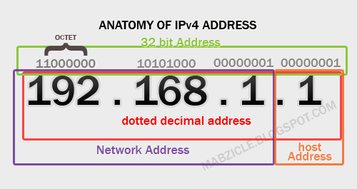 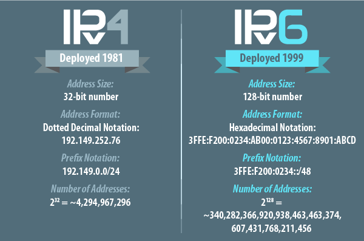
- An IP address is a 32-bit number that uniquely identifies a host (computer or other device, such as a printer or router) on a TCP/IP network. IP addresses are normally expressed in dotted-decimal format, with four numbers separated by periods
- Each number in the set can range from 0 to 255. So, the full IP addressing range goes from 0.0.0.0 to 255.255.255.255
- Types of IP addresses
Private: A private network is a computer network that uses its own private address space of IP addresses while connected to the Internet. In home, office, and enterprise environments, these addresses are often used for local area networks. Private IP address ranges are defined under both IPv4 and IPv6 standards.
The IANA reserves the following IPv4 address ranges for private internets, according to the Internet Engineering Task Force (IETF) document RFC-1918, and they are not publicly routable on the global internet:
Public: An IPv4 address that can be seen on the internet is known as a public IP address. A public IP address is required for any resource in your domain that must be directly accessible from the internet.
For communication between hosts on the worldwide Internet, public IP addresses can be utilized. The IP address assigned to the home's network by the ISP is known as a public IP address. By logging into the router configuration, it is also accessible locally in this situation
- Public IP addresses come in two types: dynamic IP addresses and static IP addresses.
Dynamic IP Addresses: A dynamic IP address refers to an address assigned to a device temporarily by an ISP. Dynamic IP addresses are typically assigned to devices such as computers, smartphones, or routers. They provide a level of anonymity and security as the IP address changes periodically, making it more difficult to track a specific device or user. When a device connects to the ISP's network, it is assigned an available IP address from a pool. This address is then borrowed for a specific duration before being returned to the pool and assigned to another device.
Static IP Addresses: A static IP address is a fixed address assigned to a device that remains constant. They are typically used for hosting websites or running servers. By having a fixed IP address, users can easily connect domain names to their servers, ensuring that their websites or services are always accessible. Static addresses are manually configured either on the device itself or by the network administrator. Static IP addresses are typically provided by the user’s ISP or network administrator, and typically come at an additional cost
Private: A private network is a computer network that uses its own private address space of IP addresses while connected to the Internet. In home, office, and enterprise environments, these addresses are often used for local area networks. Private IP address ranges are defined under both IPv4 and IPv6 standards. The IANA reserves the following IPv4 address ranges for private internets, according to the Internet Engineering Task Force (IETF) document RFC-1918, and they are not publicly routable on the global internet:
Public: An IPv4 address that can be seen on the internet is known as a public IP address. A public IP address is required for any resource in your domain that must be directly accessible from the internet. For communication between hosts on the worldwide Internet, public IP addresses can be utilized. The IP address assigned to the home's network by the ISP is known as a public IP address. By logging into the router configuration, it is also accessible locally in this situation
Dynamic IP Addresses: A dynamic IP address refers to an address assigned to a device temporarily by an ISP. Dynamic IP addresses are typically assigned to devices such as computers, smartphones, or routers. They provide a level of anonymity and security as the IP address changes periodically, making it more difficult to track a specific device or user. When a device connects to the ISP's network, it is assigned an available IP address from a pool. This address is then borrowed for a specific duration before being returned to the pool and assigned to another device.
Static IP Addresses: A static IP address is a fixed address assigned to a device that remains constant. They are typically used for hosting websites or running servers. By having a fixed IP address, users can easily connect domain names to their servers, ensuring that their websites or services are always accessible. Static addresses are manually configured either on the device itself or by the network administrator. Static IP addresses are typically provided by the user’s ISP or network administrator, and typically come at an additional cost
Transport layer
The Transport Layer is responsible for ensuring end-to-end communication between devices across a network. It plays a crucial role in managing the flow of data, error detection and correction, and ensuring that data is delivered reliably and in the correct order
key function
Segmentation and Reassembly: The Transport Layer divides large messages into smaller segments for transmission and reassembles these segments back into the original message at the destination. Segmentation allows large amounts of data to be transmitted efficiently over the network.
Flow Control: The Transport Layer implements flow control mechanisms to prevent fast senders from overwhelming slow receivers. It ensures that the sender does not send data too quickly for the receiver to process, preventing data loss due to congestion.
Error Detection and Correction: The Transport Layer detects errors in the received data and may implement error correction techniques to ensure the integrity of the transmitted information. Error detection codes, such as checksums, are used to identify corrupted data, allowing for retransmission if errors are detected
Connection Establishment, Maintenance, and Termination: The Transport Layer can establish, maintain, and terminate connections between devices. For example, in TCP (Transmission Control Protocol), a widely used transport layer protocol, connections are established before data exchange and terminated after the data exchange is completed.
Port Numbers: Ports are used to identify specific processes or services on devices. Transport Layer uses port numbers to distinguish different services running on the same device
Protocols: Common transport layer protocols include TCP (Transmission Control Protocol) and UDP (User Datagram Protocol). TCP provides reliable, connection-oriented communication, whereas UDP offers faster, connectionless communication with less overhead.
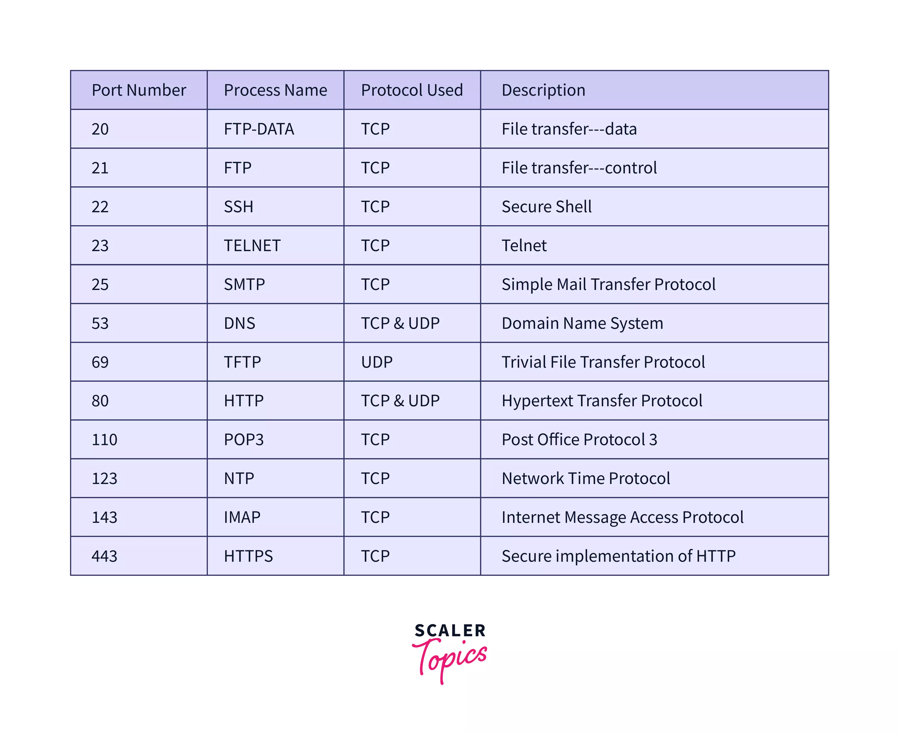
Session layer
the Session Layer focuses on managing communication sessions, ensuring that devices can establish connections, exchange data in an organized manner, recover from failures, and terminate sessions gracefully.Software applications and networking protocols handle session management tasks, ensuring that data exchange occurs smoothly and efficiently between devices.
key function
Dialog Control: The Session Layer manages the flow of dialog between two devices. It allows devices to take turns sending data and ensures that data exchange is organized and structured
Synchronization: The Session Layer provides synchronization points in the data flow to allow for proper sequencing of exchanged data. It ensures that data is sent and received in the correct order, preventing issues like data duplication or out-of-sequence delivery.
Checkpointing: Checkpointing is the process of creating checkpoints during a session, allowing devices to resume communication from a specific point in case of a failure. This feature ensures fault tolerance and data integrity during long communications.
Session Recovery: In case of a network failure or interruption, the Session Layer supports the recovery of ongoing sessions. It helps devices re-establish communication and resume the session from the last known checkpoint.
Session Termination: When the data exchange is complete, the Session Layer is responsible for orderly termination of the session. It ensures that both devices agree that the session has ended and releases any resources associated with the session.
Connection Management: The Session Layer manages the opening, maintaining, and closing of logical connections between devices. These connections are established during the session establishment phase and are used for the duration of the session
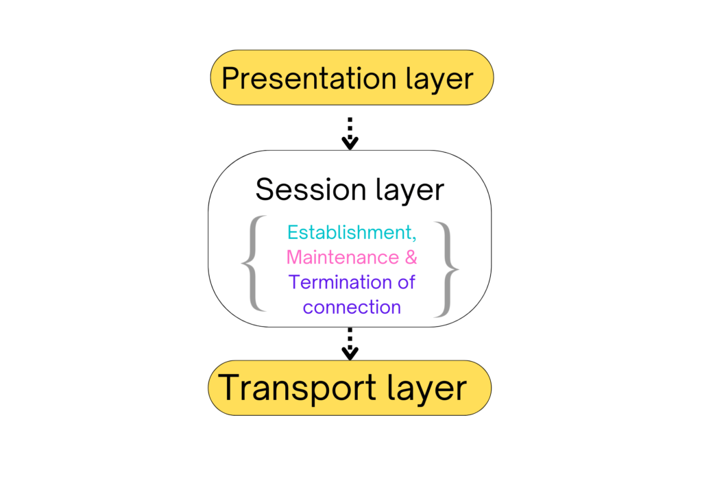
Presentation layer
The Presentation Layer is responsible for translating, encrypting, and compressing data exchanged between two devices. It ensures that the data sent by one system is in a format that can be understood by the receiving system, regardless of differences in data representation or encoding methods.
key function
Data Translation: The Presentation Layer translates data between the format used by the application layer and the format that can be transmitted over the network. It handles issues related to data representation, character encoding, and data conversion between different formats
Data Encryption and Decryption:The Presentation Layer can encrypt data to ensure secure transmission over the network. Encryption converts the original data into an unreadable format, and decryption at the receiving end converts it back to the original form. This process helps in securing sensitive information during transmission.
Data Formate
- Text Format:
Text Format: Represents textual data. Characters are encoded using character encoding schemes like ASCII (American Standard Code for Information Interchange) or Unicode. Text formats include plain text (.txt), XML (eXtensible Markup Language), JSON (JavaScript Object Notation), and HTML (HyperText Markup Language). - Binary Format
0s and 1s. Binary formats are more compact and efficient for storing and transmitting data. Examples include image formats (JPEG, PNG), audio formats (MP3, WAV), and video formats (MP4, AVI). - Numeric Format
Numeric formats include integers, floating-point numbers, and scientific notation. The format determines how numbers are represented, including precision and range. - Date and Time Format
Date and time formats specify how dates, times, and time zones are represented in data. - Structured Format
Represents structured data, where data elements are organized into records or fields. Structured formats are common in databases and spreadsheets - Binary-Coded Decimal (BCD) Format
BCD encodes each decimal digit into a 4-bit binary code.
Encoding
- Character Encoding:
Converts characters into binary code. ASCII, Unicode, and UTF-8 are popular character encoding schemes. - Compression Encoding:
Compression algorithms like Huffman coding and Run-Length Encoding are used for this purpose. - Error Detection and Correction Encoding
Error Detection and Correction Encoding - Image and Audio Encoding
: Converts images and audio signals into digital formats. Image encoding standards include JPEG, PNG, and GIF. Audio encoding standards include MP3, AAC, and PCM. - Encryption:
Converts data into a secure, unreadable form to protect it from unauthorized access. Encryption algorithms like AES (Advanced Encryption Standard) and RSA (Rivest-Shamir-Adleman) are used for secure communication and data protection
Data Compression: The Presentation Layer can compress data to reduce the amount of data that needs to be transmitted over the network. Data compression algorithms are used to shrink the size of files, making data transfer more efficient, especially in bandwidth-constrained environments.
These algorithms find patterns, repetitions, or redundancies within the data and represent them in a more compact form.
- Removing Redundancies
- Encoding Patterns
- Using Dictionary-based Compression
- Applying Huffman Coding
- Lossless vs. Lossy Compression
Syntax Checking: The Presentation Layer performs syntax checking to ensure that the data being transmitted conforms to the syntax rules of the communication protocol. It detects errors related to the structure of the data..
Data Formatting: The Presentation Layer is responsible for formatting data into a readable and understandable format for the application layer. It prepares the data for display to users or for further processing by applications
Data Integrity Checks: The Presentation Layer may include mechanisms for ensuring data integrity, such as checksums or hash functions. These checks help detect any errors or tampering that might have occurred during transmission
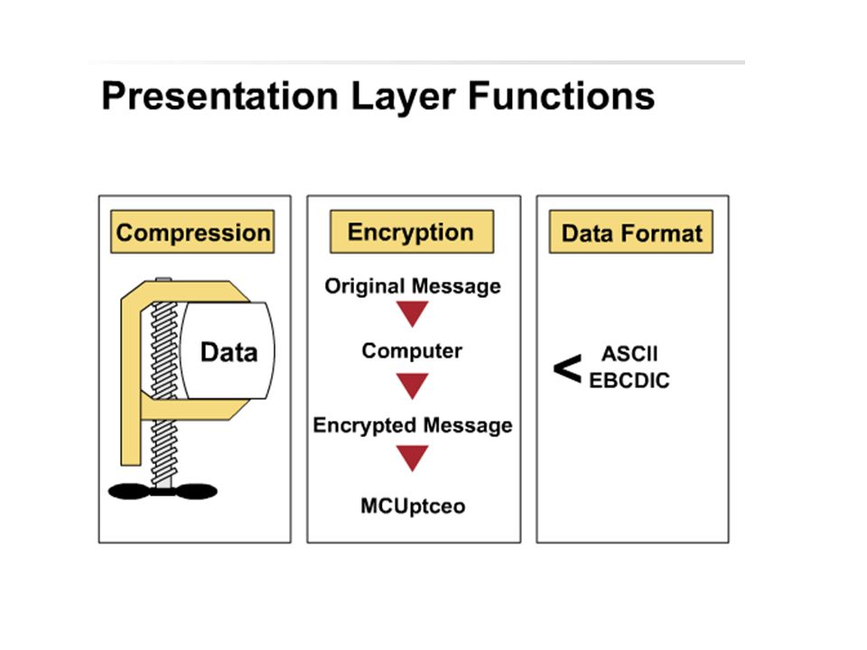

Application layer
This layer deals with the physical connection between devices
the transmission and reception of raw data bits over a physical medium such as cables or wireless signals
key function
Interface with User Applications: It specifies the data rate, which is the speed at which data is transmitted over the network. It is usually measured in bits per second (bps). Bandwidth refers to the maximum data rate that a communication channel can support
Network Services: The Application Layer provides a wide range of network services, including email, file transfer, remote login, web browsing, and database access. Each of these services has specific protocols associated with them, such as SMTP for email, FTP for file transfer, HTTP for web browsing, and so on..
Data Exchange and Communication: Applications at the Application Layer exchange data and communicate with each other using predefined protocols and standards. These protocols define the rules and formats for data exchange, ensuring compatibility between different applications regardless of their underlying hardware or operating systems..
User Authentication and Authorization: The Application Layer supports user authentication and authorization processes, allowing users to log in, access specific resources, and perform actions based on their privileges. Security mechanisms, such as usernames, passwords, and access control lists, are often implemented at this layer
Presentation of Data: The Application Layer is responsible for data presentation and formatting. It ensures that data is displayed to users in a readable and understandable format. It may involve tasks like data translation, encryption, and compression to ensure secure and efficient data exchange.
Network Virtual Terminal: The primary purpose of NVT is to enable remote terminal connections over a network. It allows a user on one system to log into another system remotely and interact with it as if they were physically present at the remote machine. This capability is particularly important for scenarios where users need to access resources or run applications on a remote server
Support for Network Management and Administration: These applications enable network administrators to configure, monitor, and troubleshoot network resources.
Support for Distributed Processing: It enables applications to coordinate and share data across networked devices, facilitating distributed computing
 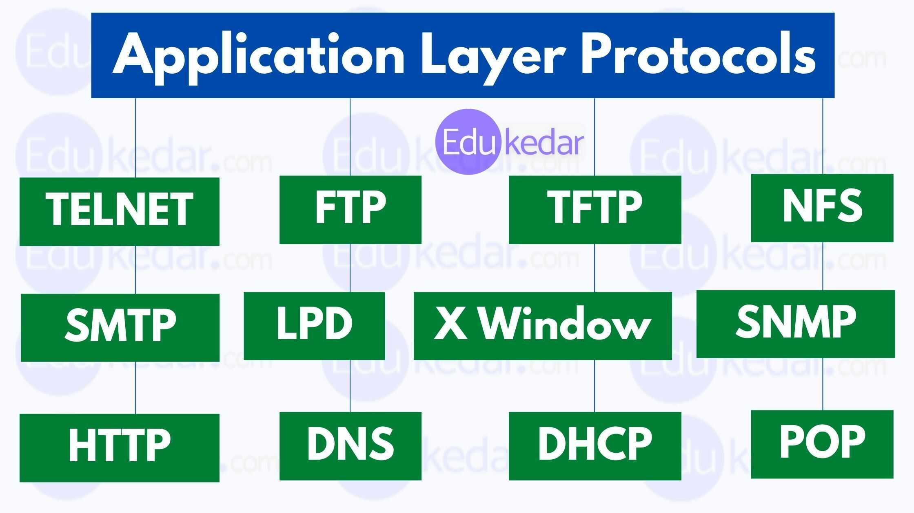
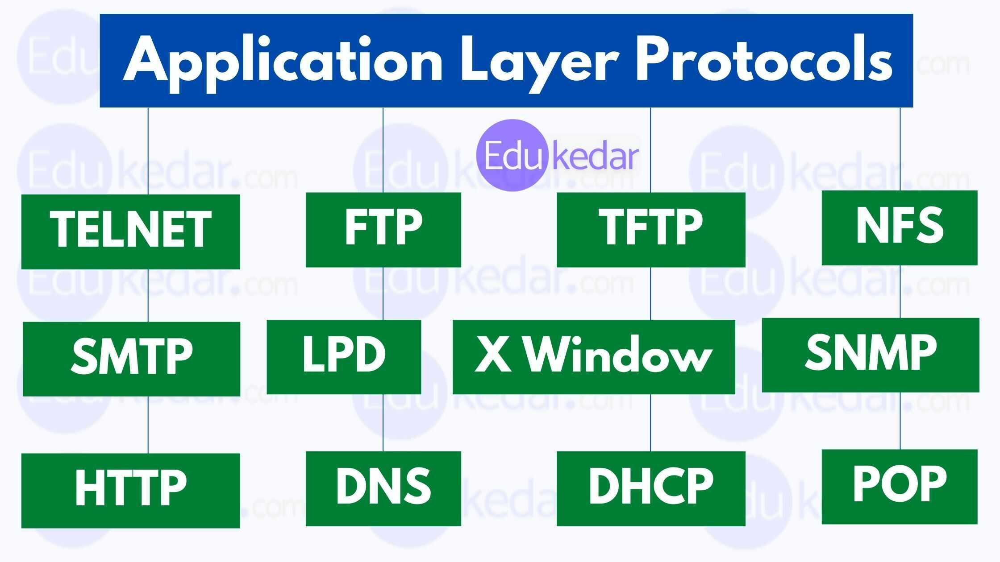
Attack and Exploit of layers
| Layers | Attacks | Explaination | troubleshoot |
|---|---|---|---|
| Physical Layer |
|
|
Eavesdropping
Hardware Tampering
|
| Data Link Layer |
|
|
MAC Address Spoofing:
ARP Spoofing/Poisoning:
VLAN Hopping:
|
| Network Layer |
|
|
IP Address Conflicts:
Routing Errors:
Network Congestion:
|
| Transport Layer |
|
|
Connection Failures:
Slow Data Transfer:
Port Conflicts:
|
| session Layer |
|
|
Session Establishment Failures:
Session Hijacking:
|
| presentation Layer |
|
|
Data Format Errors:
Encryption/Decryption Failures:
|
| Application Layer |
|
|
Application Errors:
Functionality Failures:
|